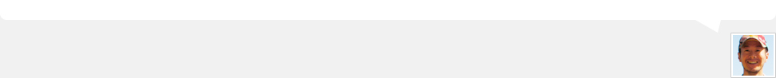
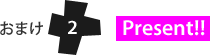
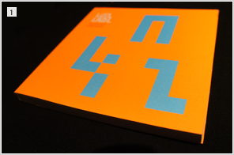
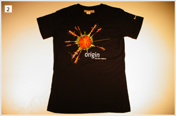
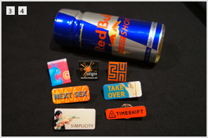

オーストリアのリンツまで、「uniba」のスタッフ7名で約1週間行って参りました。リンツは、それはもう美しい街でこの時期の気候は湿度の高くない秋晴れで最高の"アルス日和"でした。夜のドナウ川に古い町並みと近代的なたたずまいの「アルスエレクトロニカセンター」と「レントス(美術館)」が映り込む光景は、上海や香港などのアジアの大都市とはまた違い、記憶に深く残る光景でした。
なんせ、人口20万人しかいないので大都会東京と違って人のテンションがゆるくておよろしいかんぢ。と、油断していたら「アルスエレクトロニカセンター」や街中では、まるで東京のように某大手代理店マンやアーティストと会ったりしてお祭り騒ぎの毎日でした。
個人的に「アルスエレクトロニカ」と言えば、「最先端」「デジタル」っていうイメージだったのだけど、実際に色々な作品を見て回ると、アナログ表現をベースにした作品も多くあり、アーティストなら誰しもが参加する事が可能なイベントと言う事を体感できました。「テクノロジー」も「作品」も受け手側の感情に揺らぎを起こす事ができて始めて成立するもの。人々の生活にとけ込む事がなく、感動を与える事のできないマニアだけが喜ぶような最先端テクノロジーを競って誇示する時代はもうとっくに終わっている事を思い知らされた滞在でもありました。
「uniba」もそんな感動を与えられる会社になるべく、みんなで精進していきたいと思っています。
このリポートを機に「uniba」を初めて知った方もそうでない方もこれからも末永くよろしくお願い致します。
来年のアルスが待ち遠しかぁ!!

![おまけ[1]](../ref/images/editorial/h_omake_01.gif)
9月3日(土)の19:30位から始まった花火大会のフィナーレ部分。
人口20万人の街で、川沿いに集まったのはなんと10万人。
この日は天気もよくって、最高の土曜日の夜となったのでした。アルスエレクトロニカセンター前の川沿いから撮影。

この「アルスレポート2011」を読んでくれた方へ、ささやかなプレゼントを用意しました。
「ars［アットマーク］uniba.jp」へ「希望アイテムNO.」と「このリポートの感想」「名前」を知らせてくれた人の中から抽選で、アルスエレクトロニカオリジナルグッズやリンツで見つけてきたアイテムをプレゼント。
締め切り : 2011年10月31日(月) 必着
※ご連絡頂くメールアドレスは、PCメールが届くアドレスからでお願いします。
「uniba」のfacebookページ(http://www.facebook.com/UnibaInc) もよろしく!
1. linzlabyrinth urban guide(リンツのクールスポットが紹介されているガイドブック)
2. 今年のテーマ「orijin」がプリントされたTシャツ(レディスSのみ)
3. アルスエレクトロニカオリジナルピンバッジ
4. レッドブルの濃縮バージョン(2本セット)



※ 当選した方には、弊社よりご連絡頂いたメールアドレス宛に個別にご連絡を差し上げます。
当選した方にはプレゼントをお送りするためにご住所とお名前をお伺いさせて頂きますので予めご了承ください。
なお、お預かりした個人情報は、プレゼント送付以外に使用させて頂く事はありません。
CREDIT
齋藤 秀行 (撮影、FESTIVAL REPORTページテキスト)、今野 聖也 (FESTIVAL REPORTページテキスト)、谷藤 圭一 (FESTIVAL REPORTページテキスト) 、村山 遼 (HOW TO GOページテキスト)、小松 純 (環境構築)、菊地 玄摩 (撮影、ロゴデザイン、INTERVIEWページテキスト)、五木田 唯衣 (デザイン、コーディング、撮影、TOPICSページテキスト)、片山 慎一 (各扉撮影ほか、テキスト、企画・編集)